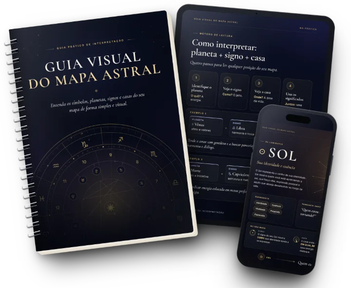
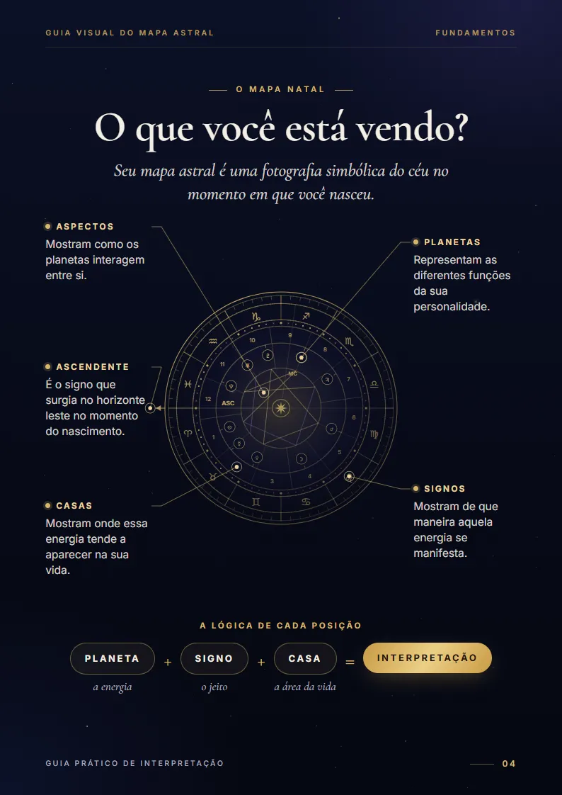
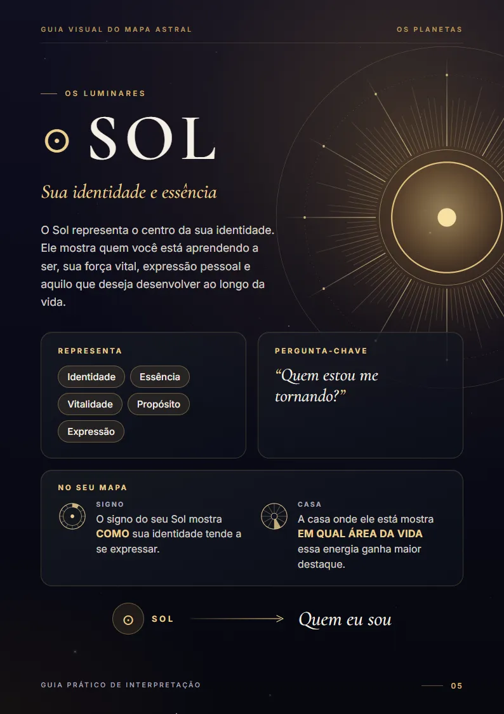
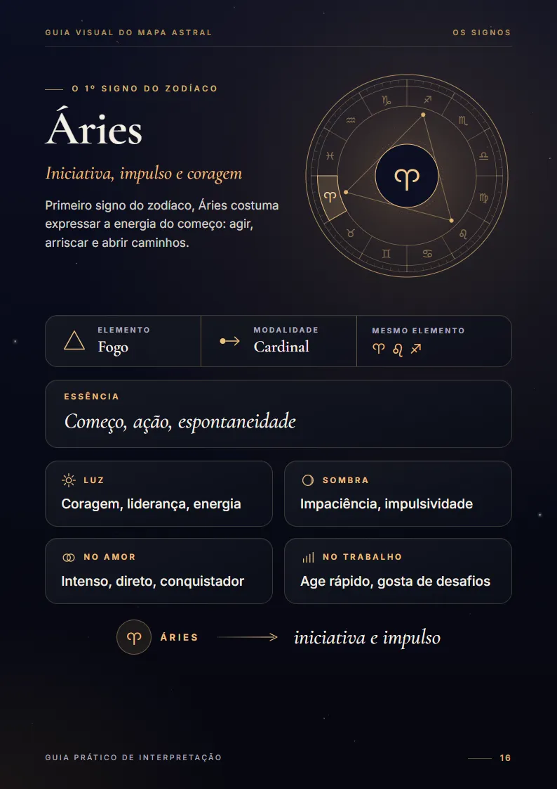
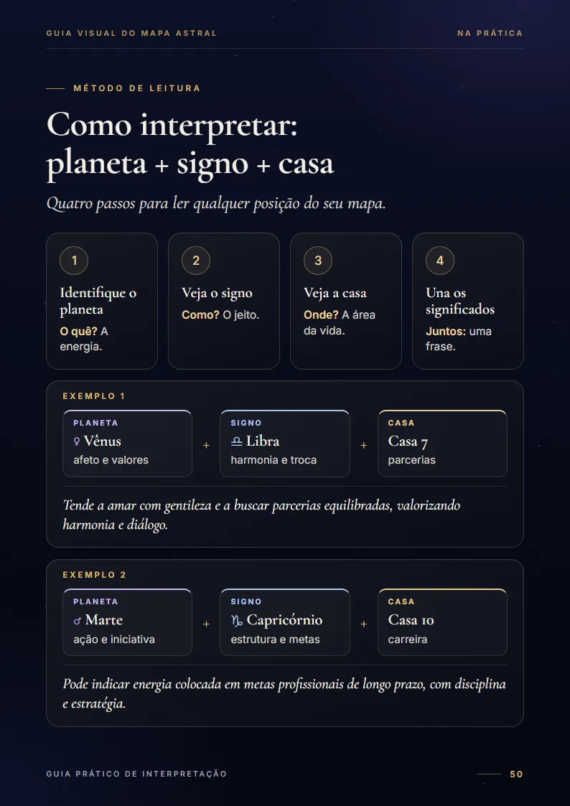
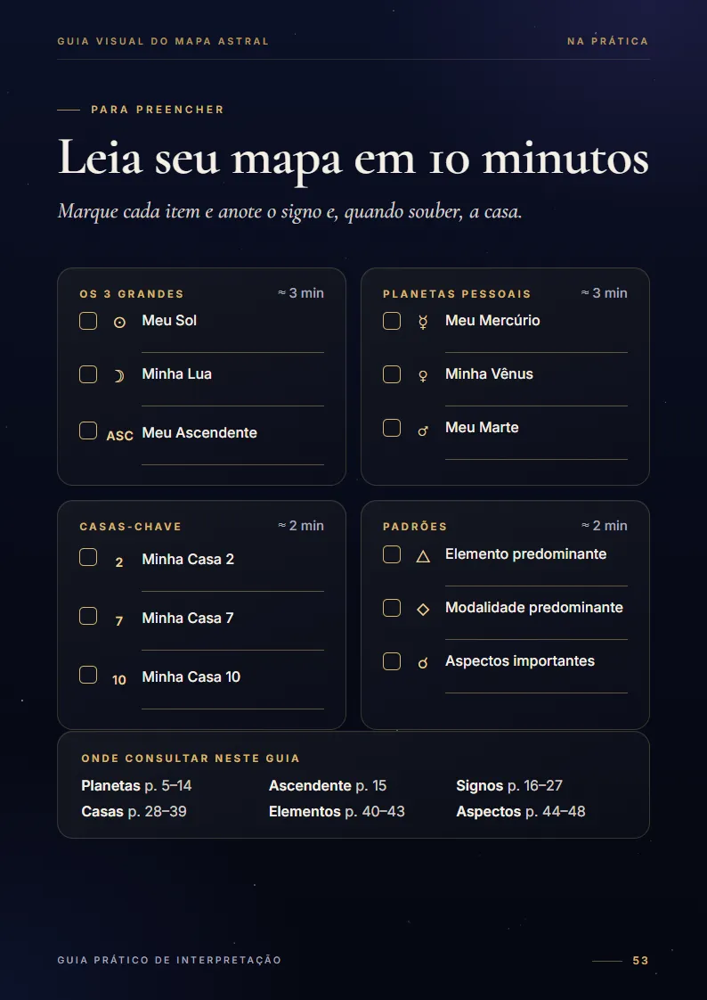
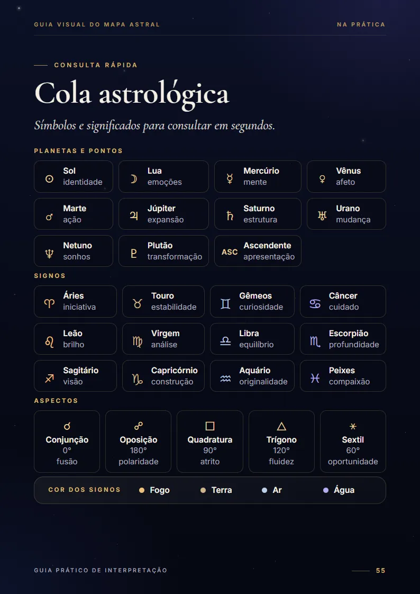

Abra seu mapa astral e saiba por onde começar.
Um guia visual para entender planetas, signos e casas e ler os pontos principais do seu mapa com um checklist de 10 minutos — sem decorar significados.
Para iniciantes que têm o mapa em mãos — ou vão gerar gratuitamente — e não sabem por onde começar.
Guia Visual do Mapa Astral
Material digital em PDF

O problema
Você encontra os significados. Mas não sabe como juntar tudo.
Você pesquisa seu Sol, sua Lua, Vênus, casas… e encontra uma explicação para cada coisa.
Mas continua sem saber por onde começar.
O problema não é encontrar informação.
É entender como tudo se conecta.
Cada símbolo tem um significado. O sentido aparece quando você junta as peças.
Como o guia ensina
Aprenda a juntar as peças do seu mapa.
Essas três perguntas já ajudam você a começar uma interpretação.
Os aspectos mostram como as energias interagem.
Veja como funciona
“Tende a amar com gentileza e a buscar parcerias equilibradas, valorizando harmonia e diálogo.”
Exemplo do Guia Visual do Mapa Astral
Viu a lógica?
Você não decorou a frase. Você juntou as peças.
O que você vai receber
Tudo que você precisa consultar em um só lugar.
Estas são páginas reais do guia.






- 10 planetas e o Ascendente — o que cada um representa e a pergunta que ele responde.
- 12 signos, um por página — essência, luz, sombra, amor, trabalho, elemento e modalidade.
- 12 casas — os temas de cada área da vida e o que muda quando há planetas nela.
- Elementos e padrões — entenda os 4 elementos, as 3 modalidades e as predominâncias do mapa.
- 5 aspectos principais — ângulo, orbe e exemplo prático.
- Na prática — os 3 grandes, método em 4 passos e exemplos guiados.
- Ferramentas de consulta — checklist de 10 minutos, ficha pessoal e cola astrológica.
Este guia é para você se…
- tem seu mapa astral em mãos ou vai gerar gratuitamente;
- conhece o básico, mas ainda se perde;
- sente que existe coisa demais para decorar;
- quer começar a interpretar o próprio mapa.
Não é para você se procura:
- formação profissional;
- previsões;
- uma leitura pronta do seu mapa.
Este não é um mapa astral pronto.
É um guia para você aprender a entender o seu.
Acesso ao guia completo
Guia Visual do Mapa Astral
Guia visual em PDF · 56 páginas · com sumário clicável
- 10 planetas e o Ascendente, um por página
- 12 signos e 12 casas explicados visualmente
- 4 elementos, 3 modalidades e 5 aspectos
- Método planeta + signo + casa com exemplos guiados
- Checklist “Leia seu mapa em 10 minutos” e ficha pessoal
- Cola astrológica para consulta rápida
PDF de 56 páginas · Sem mensalidade
Perguntas frequentes
Dúvidas rápidas
Preciso saber astrologia?
Não. O guia foi feito para quem está começando. Tudo é explicado do zero, de forma visual.
Vou receber a leitura do meu mapa?
Não. Você não recebe um mapa pronto nem uma interpretação personalizada. O guia ensina você a entender o seu próprio mapa.
Ainda não tenho meu mapa. Serve para mim?
Sim. Você pode gerar seu mapa gratuitamente em sites ou aplicativos de astrologia usando data, horário e cidade de nascimento e depois usar o guia para começar.
Preciso saber minha hora de nascimento?
Ajuda, mas não impede. Sem a hora, você já usa os planetas e os signos. O Ascendente e as casas dependem da hora e do local de nascimento.
É um curso?
Não. É um guia em PDF para consultar quando surgir uma dúvida. Não tem aulas, módulos nem prazo.
É um produto físico?
Não. É um produto digital em PDF. Nada é enviado pelo correio.
Preciso imprimir?
Não. O guia foi feito para consulta digital. Se preferir, você também pode imprimir páginas específicas.
Consigo usar no celular?
Sim. O PDF abre no celular, tablet e computador. No celular, algumas páginas podem exigir zoom; tablet e computador oferecem uma leitura mais confortável.
É pagamento único?
Sim. Você paga uma vez e o arquivo é seu. Não é assinatura e não tem mensalidade.
Comece a entender seu mapa uma posição de cada vez.
O quê? Como? Onde?
Junte as peças e comece por aí.
Você não precisa decorar tudo.
Precisa saber como juntar as peças.